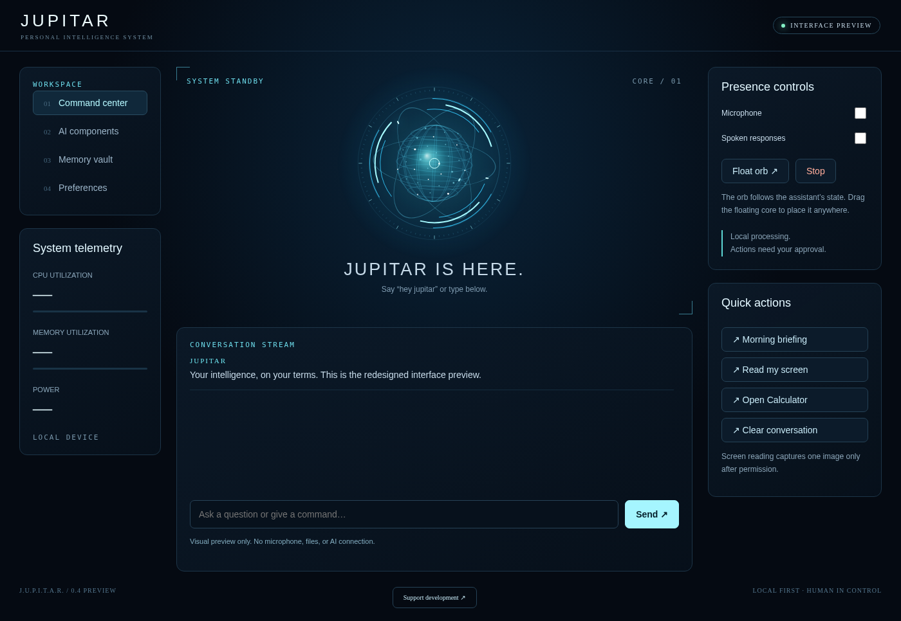

Your own orbital core.
A transparent, always-on-top desktop orb with tilted orbit paths, rotating rings and state-aware animation. Move it where it belongs.
A personal command center that feels a world ahead.
Talk naturally. Keep approved memories close.
Let your computer work with you.
A luminous orbital core. Quiet telemetry. A focused conversation stream. The redesigned command center gives your assistant its own space, without taking over yours.

A transparent, always-on-top desktop orb with tilted orbit paths, rotating rings and state-aware animation. Move it where it belongs.
Rajdhani headings, restrained cyan light, generous spacing and reduced-motion controls. A command center, not a wall of blinking numbers.
Change the assistant’s name and wake phrase. Keep your approved preferences and memories when you do.
Ask questions, explore ideas, share a joke, or switch between typed and spoken conversation. Local models handle the dialogue.
Open supported apps, create new documents, find filenames, set reminders and control media. Review proposed actions before they run.
Approve what it remembers. View, edit or delete saved entries. Stored locally as plain text, not silently sent to a cloud account.
Ask for one-shot screen analysis after explicit consent. No continuous screen watching. Keep private windows closed before capture.
AI can make mistakes. Windows integration and 16 GB performance need testing. Natural neural Gujarati speech, universal desktop automation and robust speaker echo cancellation are not included. Voice output uses installed Windows offline voices.
First-launch setup shows real transfer progress, measured speed and an estimated time remaining. Pause and resume without starting over when the server supports ranges.
Illustrative numbers only. The installed app calculates these values from the actual transfer. ETA changes with your connection; verification is separate.
Windows x64 preview · 16 GB RAM target · Initial internet download required.
Checking for a publicly published Windows installer. No download is claimed until an asset is found.
Download only builds you trust. Do not disable Windows security protections. This project is not Microsoft Store certified. Public download availability depends on the publisher releasing a tested installer.
Not for a successfully compiled Windows installer. The build bundles the runtime and native local engine. The source ZIP is for developers and is not itself an installer.
Supported local features work offline after initial component downloads. Browser searches, support links and external email applications may use internet. The website itself uses GitHub’s API to check releases.
Local recognition and conversation attempt English, Hindi, Gujarati and mixed language. Quality varies and needs native-speaker testing. Natural Gujarati neural speech is not bundled; spoken replies depend on installed Windows offline voices.
No. This preview has a bounded set of supported tools, not unrestricted mouse or browser automation. Destructive cleanup requires typed confirmation. It never automatically purchases, pays or sends email.
Just-in-time Unified Personal Intelligence for Tasks, Automation & Reasoning. An independent, original local-assistant project by Uootsav.